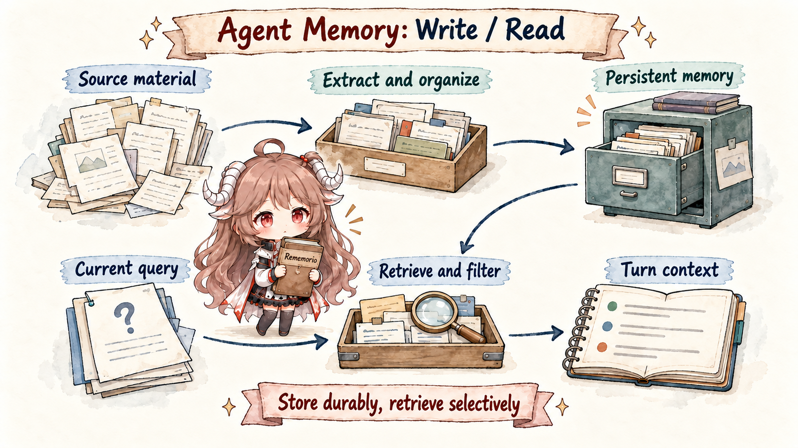

Reading memory projects by starting with embeddings, graphs, BM25, or RRF quickly turns into term matching. A better route is to follow one request through the system: whether the new message should become durable memory, whether an old memory should be preserved or softened, which tool results belong only to this task, and what finally enters the prompt as text, summary, entities, or ranked records.
This first piece is the route map. It explains the write and read loops as an executable path, then places Mem0, Letta, Graphiti, LangMem, TencentDB-Agent-Memory, Cognee, and Supermemory on one map. Later source chapters can then focus on which responsibility each system takes over, not on isolated feature names.
Evidence boundary. The series will use public repositories, official documentation, papers, and project blogs. This entry only classifies projects from public positioning and README-level material. Later source notes will inspect concrete data models, call paths, indexes, and retrieval logic. When hosted service internals are not public, I will describe the public API contract rather than infer private implementation details.
1. Follow One Request: What Memory Does For An Agent
Imagine a coding agent working with you for three weeks. In week one, you tell it not to mock the database. In week two, a test failure teaches it that billing depends on real tenant configuration. In week three, you ask only: “continue the reimbursement fix from last time.” Without memory, the agent has to rediscover the chat and tool traces. If it pastes everything into the prompt, logs and stale conclusions drown out the useful facts.
This is where the memory layer enters: write reusable facts from conversation into memory records, then read a small set of relevant records back into the current model context. The write side may be called extraction, add, upsert, or memory write. The read side may be called search, retrieve, recall, or context assembly.

1.1 Write: Turn Raw Conversation Into Durable Facts
Writing memory is not a transcript dump. A conversation contains small talk, temporary instructions, tool output, user preferences, project facts, and changing timelines. The memory layer first decides what may be useful later, then turns that content into a more stable record. The write path usually has five steps:
| Step | What the system decides | What comes out |
|---|---|---|
| Observe | Which parts of the turn, reply, and tool trace deserve inspection. | A conversation, event, or tool trace. |
| Extract | Which sentences may influence later answers or actions. | Candidate memories such as preferences, facts, and constraints. |
| Merge | Whether a candidate repeats, extends, conflicts with, or introduces a fact. | ADD, UPDATE, NOOP, or an append-only record with old evidence preserved. |
| Persist | Which user, agent, workspace, project, or entity owns the fact. | A memory record with source, scope, time, confidence, and entity links. |
| Index | How this record should be found later. | Keyword indexes, vectors, graph edges, and metadata fields. |
Tokenization and embeddings are infrastructure in this loop. Keyword indexes need tokens; Chinese search often needs a segmenter such as GSE before BM25 can work well. Embeddings turn text into vectors so later semantic search can find similar meaning. These steps help indexing, deduplication, and similar-memory lookup. The judgment about whether a sentence deserves durable memory still needs extraction prompts, rules, schema, timestamps, and application boundaries.
The source makes that boundary concrete.
In the current Mem0 OSS code, add()
builds storage metadata and query filters from user_id, agent_id, and run_id,
then sends normalized messages into _add_to_vector_store(..., infer). With the default
infer=True, _add_to_vector_store()
gathers recent messages, retrieves a small set of similar old memories, and then calls the LLM once for extraction.
processed_metadata, effective_filters = _build_filters_and_metadata(...)
vector_store_result = self._add_to_vector_store(
messages, processed_metadata, effective_filters, infer, prompt=prompt
)
last_messages = self.db.get_last_messages(session_scope, limit=10)
existing_results = self.vector_store.search(..., top_k=10, filters=search_filters)
response = self.llm.generate_response(...)The write entry already carries scope. The LLM sees new messages, recent messages, and a small set of similar old memories, not the entire memory store. Embeddings and vector search find nearby evidence; the LLM turns candidate facts into memory records.
1.2 Read: Assemble the Model View for This Turn
Reading memory has the opposite pressure: the memory store can grow, while the prompt can only accept a small working set. When the user asks “continue the reimbursement fix from last time,” the system should not paste three weeks of history. It narrows scope, recalls candidates through several signals, and then compresses the result into the model view.
| Step | What the system does | Why it matters |
|---|---|---|
| Filter scope | Narrow by user, agent, workspace, project, time range, or permission. | Keeps other users, other projects, and expired facts out of the prompt. |
| Recall candidates | Use BM25 for exact terms, vector search for semantics, and entities or graphs for related objects. | A single path misses either paraphrases or object-specific distinctions. |
| Fuse and rank | Combine candidates with RRF, rerankers, time decay, or business weights. | Order affects what the model notices first. |
| Trim budget | Keep only top-k or the records that fit the token budget. | The model needs a working set, not the whole memory store. |
| Assemble context | Render records as bullets, citations, profile text, or tool results. | Stored records are rarely the best prompt shape. |
That is why BM25, RRF, rerankers, and hybrid search often appear together. BM25 scores keyword matches. Vector search scores semantic similarity. RRF can fuse lists by rank instead of raw score. A reranker can make a finer relevance decision over the candidate set. The goal is simple: the memory store can be large, but the model view must stay small, precise, and relevant to the current question.
Mem0's read path shows the same shape. search()
validates top_k, threshold, and filters, then calls
_search_vector_store().
The lower function runs semantic retrieval, keyword retrieval, entity boosts, and a final scoring pass.
query_lemmatized = lemmatize_for_bm25(query)
query_entities = extract_entities(query)
embeddings = self.embedding_model.embed(query, "search")
internal_limit = max(limit * 4, 60)
semantic_results = self.vector_store.search(..., top_k=internal_limit, filters=filters)
keyword_results = self.vector_store.keyword_search(..., top_k=internal_limit, filters=filters)
scored_results = score_and_rank(
semantic_results=candidates,
bm25_scores=bm25_scores,
entity_boosts=entity_boosts,
threshold=threshold,
top_k=limit,
)
This gives readers a concrete way to answer questions about BM25, RRF, and rerank. The visible OSS path
combines semantic candidates, BM25-side keyword scores, and entity boosts inside score_and_rank().
rerank is an optional outer branch in search(); RRF is not an explicit step in this path.
1.3 Put The Concepts Back Into The Path
These concepts are easier to read when they are attached to a pipeline. When source code mentions a mechanism, first ask whether it helps persist facts, recall candidates, combine candidates, or control the model-visible view.
| Concept | Where it appears | What to inspect in source |
|---|---|---|
| tokenization / GSE | write-time indexing, read-time query handling | Usually feeds keyword indexes; it does not by itself mean the system understood the fact. |
| embedding | write-time vectors, read-time vector search | Supports semantic similarity for nearby memories or candidate evidence. |
| BM25 | read-time recall or ranking | Favors exact clues such as project names, function names, and proper nouns. |
| vector search | read-time recall or write-time merge | Favors semantic similarity when wording changes but meaning stays close. |
| entity / graph | write-time extraction, read-time expansion | Connects people, projects, places, and tasks during retrieval. |
| RRF / rerank | read-time ranking | Controls the order and deduplication before memories reach the model. |
| top-k / model view | end of read | Acts as the final budget boundary for what the model actually sees. |
With that foundation, the projects below become easier to compare. Some are strongest on extraction, some on retrieval, and some are really about ownership: who owns raw history, profiles, relationships, workflow state, and the model-visible view.
2. Use Five Boxes To Locate Project Boundaries
Return to the reimbursement example. The agent is really holding five boxes. The first stores evidence: messages, files, events, and tool results. The second stores stable profile material: user preferences, team habits, and project constraints. The third stores relationships between people, projects, documents, and tasks. The fourth stores the timeline: what used to be true, what is true now, and what is planned. The fifth stores the model view for this one turn.
A useful first question for any project is which box it treats as the main battlefield. Mem0 puts write, merge, and retrieval between the application and the model. Letta binds profile, tools, messages, and agent state into one stateful agent. Graphiti organizes entities, relationships, episodes, and temporal validity as a graph. LangMem and LangGraph put memory work into workflow runtime, with hot-path and background paths. TencentDB-Agent-Memory starts with current-task context offload before building L0-L3 long-term memory. Cognee and Supermemory productize knowledge, connectors, files, and profiles.

3. Seven Routes Through Agent Memory
Mem0 presents itself as a memory layer for AI assistants and agents. It is a natural first chapter because extraction, deduplication, entity linking, multi-signal retrieval, temporal reasoning, and memory decay all sit between the application and the model.
Letta starts from agent state rather than from search. Its quickstart creates agents with memory blocks, which pulls persona, human profile, tools, messages, and runtime state into one boundary. The second chapter expands this route.
Graphiti organizes entities, facts, relationships, and episodes into context graphs with temporal validity. The important question is not only whether a text chunk can be found, but when a fact was true, when it was superseded, and which source produced it.
LangMem provides memory tools, a background manager, and integration with LangGraph's store. Its key design question is whether memory work happens in the agent's hot path or in a background maintenance path, and how that interacts with durable stateful workflows.
TencentDB-Agent-Memory handles both current-task context and cross-session user memory. It offloads heavy tool logs into refs, JSONL, and MMD task canvases, then builds long-term memory through L0 Conversation, L1 Atom, L2 Scenario, and L3 Persona.
Cognee emphasizes data ingestion, self-hosted knowledge graphs, vector embeddings, graph reasoning, and ontology generation. It is closer to building a durable knowledge layer for a company or personal brain.
Supermemory packages memory, user profiles, hybrid search, connectors, and file processing in one context engine. It closes the route after the lower-level ownership questions are clear.
4. Why Mem0 Comes First
Mem0 is useful as the opening chapter because its algorithm history exposes the central tradeoff. The paper mem0 algorithm asks an LLM to classify similar old memories with ADD, UPDATE, DELETE, or NOOP. mem0g adds an entity and relationship graph. The April 2026 algorithm materials then emphasize single-pass ADD-only extraction, entity linking, hybrid retrieval, temporal reasoning, and memory decay.
That sequence gives readers a concrete tension. Updating old memories keeps the memory set smaller, but moves the judgment about staleness into the write path. Append-only writes preserve history, but retrieval has to do more work: ranking, time interpretation, and noise control. Once that tradeoff is clear, Letta, Graphiti, LangMem, TencentDB-Agent-Memory, Cognee, and Supermemory stop looking like minor variations around a vector database.
Already published. How Mem0's Memory Algorithm Evolved is the first article in the series. It covers paper mem0, mem0g, v3, temporal reasoning, and memory decay.
5. The Article Order
The sequence follows ownership, not popularity: from an external memory layer, into agent state, then temporal graphs, workflow memory, and finally productized knowledge or context stacks. Each article should inherit a question from the previous one instead of becoming a feature checklist.
| Order | Project | Main question |
|---|---|---|
| 1 | Mem0 | How an external memory layer moves from mutable memories to ADD-only writes and multi-signal retrieval. |
| 2 | Letta / Letta Code | How memory blocks, persona, human profile, tools, and messages work when agent state is the main abstraction. |
| 3 | Graphiti / Zep | How time, provenance, and relationships change memory retrieval once they live in a graph. |
| 4 | LangMem / LangGraph | What changes when memory work happens in the hot path versus a background manager. |
| 5 | TencentDB Agent Memory | How heavy tool logs become recoverable symbolic context while L0-L3 memory captures long-term user knowledge. |
| 6 | Cognee / Supermemory | How memory changes when knowledge graphs, connectors, files, and profiles become a packaged context stack. |
6. Ask Who Owns History
The most reusable takeaway will not be a single benchmark number. It will be an ownership checklist: who stores raw history, who maintains long-term profiles, who explains relationships and temporal changes, and who assembles the final model view. Without those boundaries, embeddings, BM25, graph traversal, and reranking can all end up pushing unresolved decisions back into the prompt.
The series will read from public code and contracts in that order: entry API, data model, write path, retrieval path, then engineering tradeoffs. The goal is to make each memory record easy to classify in a real agent: evidence, profile, relationship, workflow state, or context for this turn only.